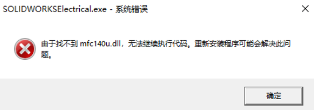

由于找不到mfc140u
由于找不到mfc140u.dll，无法继续执行代码。重新安装程序可能会解决此问题。

方法：
以下是解决“由于找不到 mfc140u.dll，无法继续执行代码”问题的方法：
- 安装 Visual C++ 运行时组件：
- 从 Microsoft 官方网站下载并安装 Visual C++ 2015、2017 和 2019 运行时组件。这些组件是并排安装的，可以同时存在。
- 下载链接：Microsoft Visual C++ Redistributable。
- 检查 SOLIDWORKS 安装包：
- 如果问题发生在安装 SOLIDWORKS 时，确保从安装文件夹中安装所有必要的依赖项，例如
..\SOLIDWORKS安装包\PreReqs\VCRedist目录下的组件。
- 如果问题发生在安装 SOLIDWORKS 时，确保从安装文件夹中安装所有必要的依赖项，例如
- 验证系统环境：
- 确保操作系统满足 SOLIDWORKS 的最低配置要求，尤其是 Windows 更新和系统补丁是否已安装。